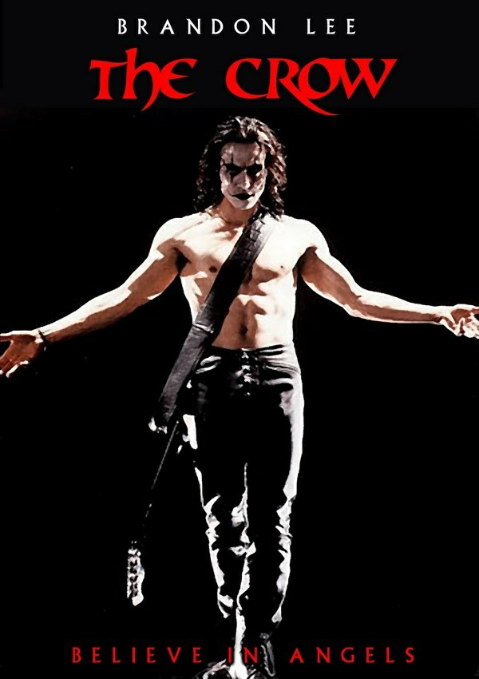
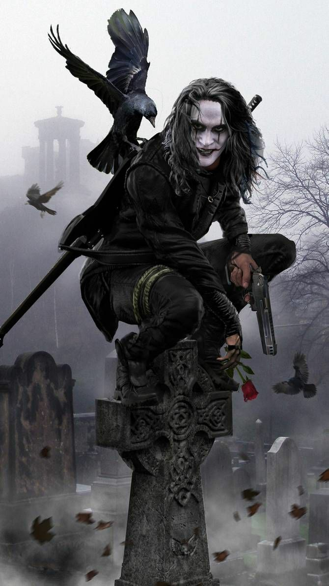

The Crow (1994 film)
with Brandon Lee
Remake of the comic books series "The Crow" by James O'Barr(img1)
Click on image to enlarge
https://en.wikipedia.org/wiki/The_Crow_(1994_film)
The Crow is a 1994 American superhero film directed by Alex Proyas and written by David J. Schow and John Shirley. It stars Brandon Lee in his final film appearance as Eric Draven, a murdered musician who is resurrected to avenge the deaths of himself and his fiancée. The film is based on James O'Barr's comic of the same name. Production on The Crow was struck by tragedy when Lee was fatally wounded during filming. As Lee had finished most of his scenes before his death, the film was completed through script rewrites, a stunt double, and digital effects. The Crow is dedicated to Lee and his fiancée, Eliza Hutton. After Lee's death, Paramount Pictures opted out of distributing the film, and the rights were picked up by Miramax, who oversaw The Crow's completion. The Crow was released to positive reviews, with the Rotten Tomatoes critical consensus praising its tone, visuals, Dariusz Wolski's cinematography, the production design, and Lee's performance. It also grossed $94 million on a $23 million budget and attained a strong cult following. The film's success led to a media franchise that includes three sequels and a television series. The sequels, which featured different protagonists and none of the original cast members, were unable to match the success of the first film.
Plot:
On October 30, Devil's Night in Detroit, Sergeant Albrecht is at the scene of a crime where Shelly Webster has been beaten and raped. Her fiancé, musician Eric Draven, lies dead on the street after having been stabbed, shot, and thrown out the window. The couple had planned on getting married the following day, Halloween. As he leaves for the hospital with Shelly, Albrecht meets a young girl, Sarah, who says that she is their friend, and that they take care of her. Albrecht reluctantly tells her that Shelly is dying. One year later, a crow taps on Eric's gravestone; Eric awakens and climbs out of his grave. Meanwhile, the street gang who perpetrated the deaths of Eric and Shelly, headed by T-Bird, is setting fires in the city. Upon returning to his old, now-derelict apartment, Eric experiences flashbacks of T-Bird and his gang (Tin Tin, Funboy and Skank) committing the murder. Eric soon discovers that any wounds he receives heal immediately; guided by the crow, he sets out to avenge his and Shelly's murders by killing the perpetrators. The crow helps Eric locate Tin Tin; Eric kills him (by stabbing him in every major bodily organ in alphabetical order) and takes his coat before going to the pawn shop where Tin Tin pawned Shelly's engagement ring, forcing the owner, Gideon, to return it. He then blows up the shop with gasoline, sparing Gideon so that he can warn the others. After finding Funboy with Sarah's drug addict mother, Darla, and killing him (by magically making him overdose), Eric confronts Darla, squeezing the morphine from her veins, making her realize that Sarah needs her to be a good mother. In the meantime Top Dollar, the crime boss who controls all the street gangs in the city, and his lover/half-sister Myca have become aware of Eric's actions through various reports from witnesses. Eric visits Albrecht, explaining who he is and why he is here. Albrecht tells him what he knows about Shelly's death and that he watched her suffer for thirty hours before dying. Eric touches Albrecht and feels the pain Shelly felt during those hours. Sarah and her mother begin repairing their strained relationship, and Sarah goes to Eric's apartment to tell him that she misses him and Shelly. Eric assures her that although they cannot be friends anymore, he still cares about her. T-Bird and Skank stop at a convenience store to pick up supplies, and Eric arrives and kidnaps T-Bird. Skank follows the pair and witnesses Eric kill T-Bird by forcing his car into the river; he escapes and goes to Top Dollar. Top Dollar holds a meeting with his associates where they discuss new plans for their Devil's Night criminal activities. Eric arrives, looking for Skank, and a gunfight ensues, with nearly everyone present being killed including Skank. Top Dollar, Myca and Grange, Top Dollar's right-hand man, escape. Eric, having finished his quest, returns to his grave. Sarah bids him farewell, and he gives her Shelly's engagement ring. Grange then abducts her and takes her into the church where Top Dollar and Myca are waiting. Through the crow, Eric realizes what has happened and goes to rescue her. Unfortunately, Myca has already divined that any injury suffered by the crow will harm Eric and Grange shoots the crow after it flies into the church, sapping Eric of his immortality. Myca grabs the wounded crow, intending to take its mystical power. Albrecht arrives, wanting to pay his respects to Eric, just after Eric is shot and wounded. Top Dollar grabs Sarah and climbs the bell tower as a fight ensues, and Albrecht kills Grange. The crow escapes Myca's grip, claws out her eyes, and sends her down the bell tower to her death. When Albrecht is wounded, Eric climbs to the roof of the church on his own. There, Top Dollar admits ultimate responsibility for Eric and Shelly's deaths. In their fight, Eric gives Top Dollar the thirty hours of pain he absorbed from Albrecht; the sensation sends Top Dollar over the roof of the church to his death. Sarah accompanies Albrecht to the hospital, and Eric is reunited with Shelly at their graves. The crow, carrying Shelly's engagement ring in its beak, later lands on Eric's grave and drops the ring into Sarah's hand before flying off over the city and into the night, while Sarah's monologue affirms that while people die, love lasts forever.
(img2), Click on image to enlarge